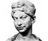

Savaşta azametli ve kararlıydı,
Hiçbir erkek ondan daha cesur değildi.
— Chaucer
Roma İmparatorluğu en geniş sınırlarına 117 yılında ulaştı. Batıda Fas, doğuda ise Pers ülkesine kadar yayılmıştı. Pax Romana (Roma Barışı) imparatorlukta yaşayanlara göreli bir istikrar ve refah dönemi sağlamıştı.

Ne var ki 2. yy’dan sonra iç savaş ve isyanlar barışı tehdit etmeye başlamıştı. Bu isyanların en ünlüsüne Suriye’deki Palmyra eyaletinin kraliçesi Zenobia liderlik etmiştir. Zenobia 269 yılında ülkesinin bağımsızlığını ilan etti ve beş yıl boyunca Romalılar’la savaştı.
Zenobia’nın isyanı en sonunda İmparator Aurelian (215-275) tarafından yenilgiye uğratıldı. Altın zincirlere vurulmuş olan kraliçe, Roma sokaklarında gezdirildi. Ancak isyan bastırılmış olsa da Roma’nın imparatorluk üzerindeki gücünün giderek zayıfladığını açığa vurmuş oldu. 200 yıl içinde imparatorluk tamamen çökecekti.
Palmyra’da doğan Zenobia 258 yılında, şehrin kralı olan Septimius Odaenathus ile evlendi. 267 yılında Odaenathus bir suikaste kurban gidince tahta çıktı. Kocasının öldürülmesi olayına onun da karışmış olması mümkündür.
Yunan klasikleri konusunda iyi bir eğitim almış olan Zenobia üç dil biliyordu. Aynı zamanda hırslı bir avcıydı. Romalı yazarlar Zenobia’yı erkeksi bir kadın olarak tarif ederler. Savaş meydanında ata binmekte, askerleriyle birlikte çöllerde yürümektedir (İngiliz tarihçi Edward Gibbon’a [1737-1794] göre kocasının onu sevmesine asla izin vermemiştir.). 269 yılında Roma’nın Mısır eyaletini ele geçirmiş ve eyalet valisinin kafasını kesmiştir. Aurelian, Suriye ve Mısır’da yeniden egemenlik tesis etmek için uğraş vermiş ve 272 yılında Zenobia’ya saldırmıştır. En sonunda Zenobia’yı Emesa şehrinde sıkıştırmış ve bir devenin sırtında kaçmaya çalışırken yakalamıştır.
Her ne kadar taraftarları idam edilmiş olsa da Zenobia Roma’ya isyan edenlerin kaderinden kurtulabilmiştir. Cesaretinden etkilenen Aurelian ona Roma yakınlarındaki Tivoli’de bir ev vermiştir. Zenobia hayatının geri kalanını burada geçirmiştir.
Ek Bilgiler
1- Zenobia İngiliz yazar Geoffrey Chaucer’in (1343-1400) Canterbury Masalları’ndan biri olan “The Monk’s Prologue and Tale” (Keşişlerin Özdeyiş ve Hikayeleri) adlı çalışmasında karşımıza çıkar.
2- Antik dünyanın büyük şehirlerinden biri olan Palmyra, Zenobia’nın ayaklanmasının intikamını almak için Romalılar tarafından büyük ölçüde yok edilmiştir. 1089 yılındaki bir depremden sonra ise şehir tamamen terk edilmiştir. Palmyra harabeleri 1980 yılında UNESCO Dünya Mirası kapsamına alınmıştır.
3- Zenobia aynı zamanda ABD’nin güneydoğusunda yetişen beyaz çiçekli bir bitkinin bilimsel adıdır.